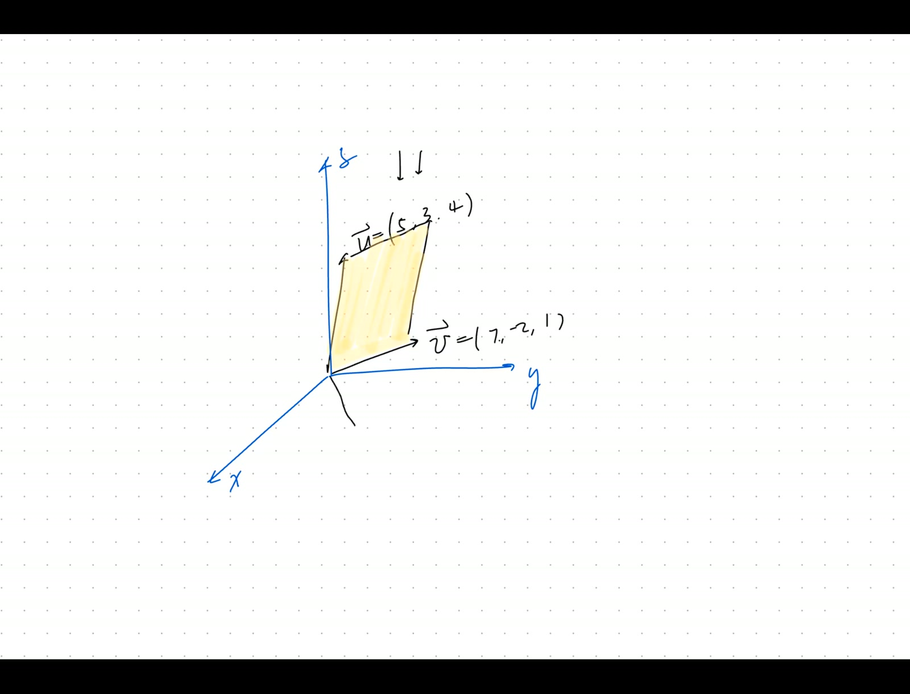
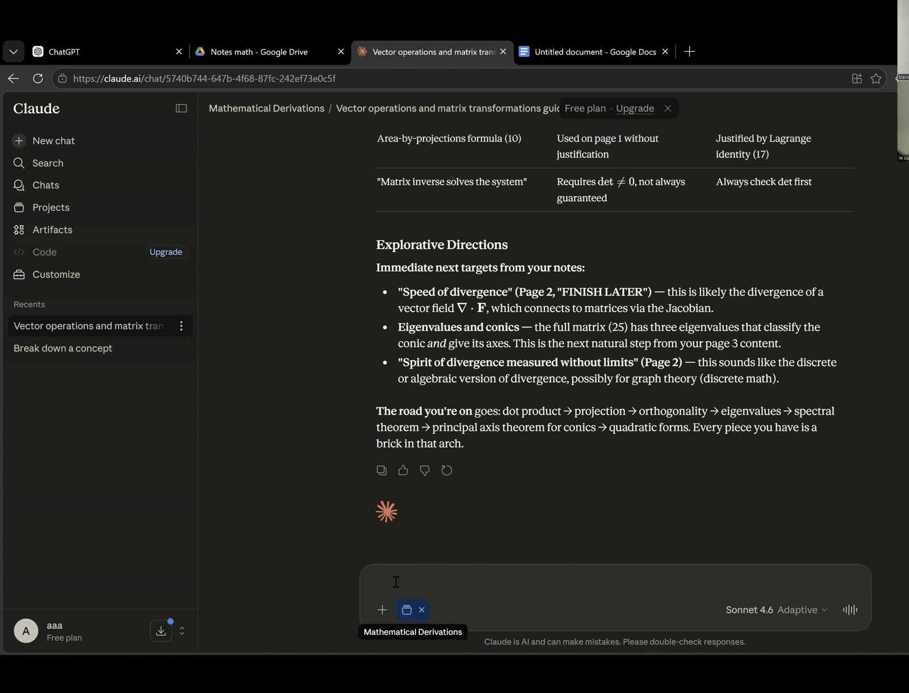
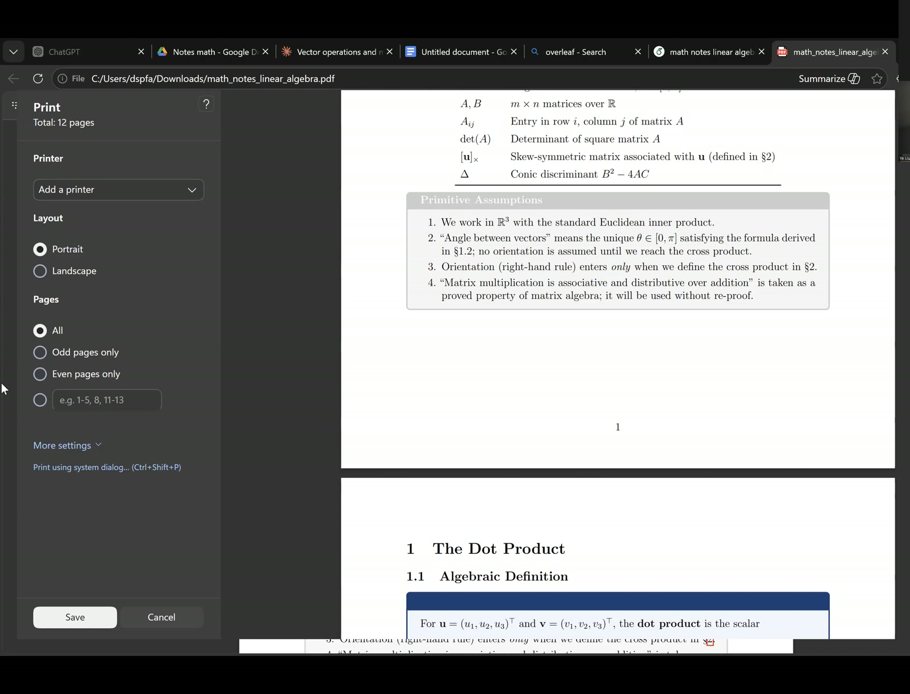
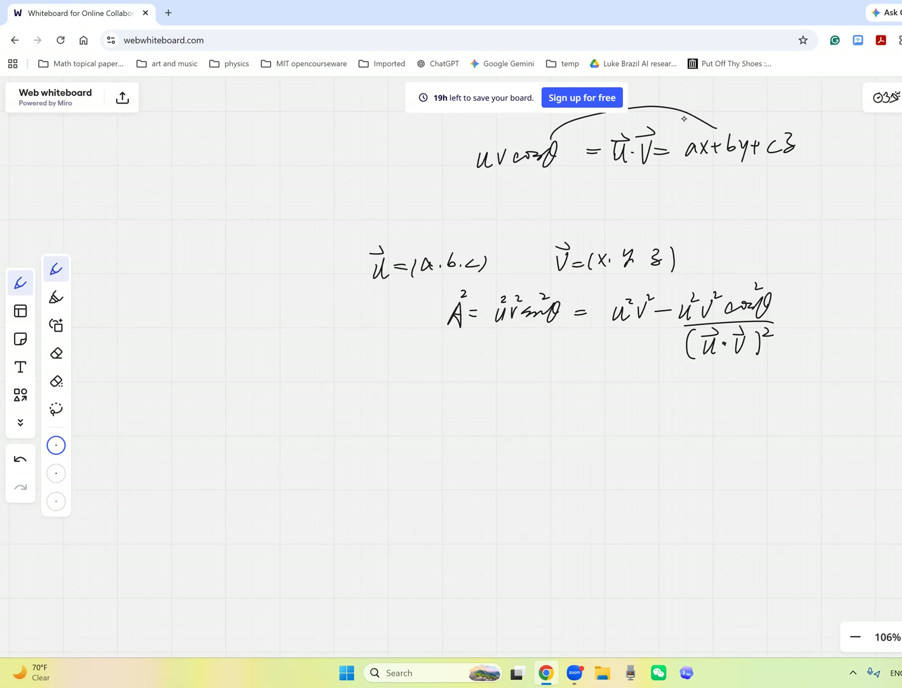

Dot/Cross Products Recovered from First Principles; Cross-Product Components as Shadow Areas
Date inferred. video1112502915.txt has no parseable date. Internal references (“physics in summer in two weeks”) place this in late spring 2026; inferred 2026-05-16.
Lead
Individual session with Elaine reconstructing the dot/cross product from first principles, ahead of upcoming physics. Establishes (1) dot product \(\mathbf{u}\cdot\mathbf{v} = |\mathbf{u}||\mathbf{v}|\cos\theta = \sum u_i v_i\), (2) the Lagrange identity \(|\mathbf{u}\times\mathbf{v}|^2 = |\mathbf{u}|^2|\mathbf{v}|^2 - (\mathbf{u}\cdot\mathbf{v})^2\) derived without invoking the cross product first, then (3) the component formula via the \(i, j, k\) determinant. Closes with the shadow-area interpretation: each cross-product component is the signed area of the parallelogram’s shadow on the corresponding coordinate plane.
Symbol dictionary
| Symbol | Meaning |
|---|---|
| \(\mathbf{u} = (a, b, c)\), \(\mathbf{v} = (x, y, z)\) | vectors in \(\mathbb{R}^3\) |
| \(\theta\) | angle between them |
| \(|\mathbf{u}|\) | magnitude \(\sqrt{a^2+b^2+c^2}\) |
| \(\mathbf{u}^*, \mathbf{v}^*\) | shadows on the \(xy\)-plane (z-coordinate set to 0) |
Theorems
(Dot product, two formulas). \[ \mathbf{u}\cdot\mathbf{v} \;=\; u_1 v_1 + u_2 v_2 + u_3 v_3 \;=\; |\mathbf{u}||\mathbf{v}|\cos\theta. \tag{64} \]
(Lagrange identity). \[ |\mathbf{u}\times\mathbf{v}|^2 \;=\; |\mathbf{u}|^2|\mathbf{v}|^2 - (\mathbf{u}\cdot\mathbf{v})^2 \;=\; (|\mathbf{u}||\mathbf{v}|\sin\theta)^2. \tag{65} \]
(Cross-product component formula). \[ \mathbf{u}\times\mathbf{v} \;=\; \det\!\begin{pmatrix}\mathbf{i} & \mathbf{j} & \mathbf{k}\\ a & b & c\\ x & y & z\end{pmatrix} \;=\; (bz - cy,\; cx - az,\; ay - bx). \tag{66} \]
(Shadow-area interpretation). Each component of \(\mathbf{u}\times\mathbf{v}\) is the signed area of the parallelogram’s shadow on the corresponding coordinate plane: $()_x = $ area on \(yz\), $()_y = $ area on \(zx\), $()_z = $ area on \(xy\). \(\tag{67}\)
Derivation of Theorem 64
Law of cosines on triangle with sides \(\mathbf{u}, \mathbf{v}, \mathbf{v}-\mathbf{u}\): \[ |\mathbf{v}-\mathbf{u}|^2 = |\mathbf{u}|^2 + |\mathbf{v}|^2 - 2|\mathbf{u}||\mathbf{v}|\cos\theta. \] Coordinates: \(|\mathbf{v}-\mathbf{u}|^2 = \sum(v_i - u_i)^2 = \sum v_i^2 + \sum u_i^2 - 2\sum u_i v_i\). Compare: \(\sum u_i v_i = |\mathbf{u}||\mathbf{v}|\cos\theta\). \(\quad\blacksquare\)
Derivation A of Theorem 65 (Pythagorean route)
Define \(|\mathbf{u}\times\mathbf{v}| := |\mathbf{u}||\mathbf{v}|\sin\theta\) (parallelogram area). Then \[ |\mathbf{u}\times\mathbf{v}|^2 = |\mathbf{u}|^2|\mathbf{v}|^2 \sin^2\theta = |\mathbf{u}|^2|\mathbf{v}|^2(1-\cos^2\theta) = |\mathbf{u}|^2|\mathbf{v}|^2 - (\mathbf{u}\cdot\mathbf{v})^2. \quad\blacksquare \]
Derivation B of Theorem 65 (coordinate algebra — independent)
Expand \(|\mathbf{u}|^2|\mathbf{v}|^2 - (\mathbf{u}\cdot\mathbf{v})^2\): \[ (a^2+b^2+c^2)(x^2+y^2+z^2) - (ax+by+cz)^2 = (ay-bx)^2 + (bz-cy)^2 + (cx-az)^2, \] which matches \((\mathbf{u}\times\mathbf{v})_z^2 + (\mathbf{u}\times\mathbf{v})_x^2 + (\mathbf{u}\times\mathbf{v})_y^2 = |\mathbf{u}\times\mathbf{v}|^2\) using (66). \(\quad\blacksquare\)
Independence. A uses Pythagorean + Theorem 64. B uses pure algebraic expansion. Either suffices; B reveals (67) as a byproduct.
Derivation of Theorem 66
Cofactor expansion of the \(i, j, k\) determinant along the first row: \[ \det = \mathbf{i}(bz - cy) - \mathbf{j}(az - cx) + \mathbf{k}(ay - bx) = (bz-cy,\; cx-az,\; ay-bx). \quad\blacksquare \]
Derivation of Theorem 67
For the \(z\)-component: cast light along the \(z\)-axis. The parallelogram projects to one with vertices \(\mathbf{0}, \mathbf{u}^* = (a,b,0), \mathbf{v}^* = (x,y,0), \mathbf{u}^*+\mathbf{v}^*\). Its 2D signed area is the \(2\times 2\) determinant \(\det\begin{pmatrix}a&b\\x&y\end{pmatrix} = ay - bx = (\mathbf{u}\times\mathbf{v})_z\). Similarly for \(x, y\) components. \(\quad\blacksquare\)
Verification audit
- Dot product orthogonal. \((1,0,0)\cdot(0,1,0) = 0 = \cos(\pi/2)\). ✓
- Lagrange at \(\mathbf{u} = \mathbf{v}\). \(|\mathbf{u}|^4 - |\mathbf{u}|^4 = 0\); parallel vectors → zero cross product. ✓
- Standard basis cross. \(\mathbf{i}\times\mathbf{j} = (0\cdot 0 - 0\cdot 1, 0\cdot 0 - 1\cdot 0, 1\cdot 1 - 0\cdot 0) = (0,0,1) = \mathbf{k}\). ✓
- Worked example. \(\mathbf{u} = (1, 7, 1), \mathbf{v} = (5, 2, 4)\). \(\mathbf{u}\cdot\mathbf{v} = 5+14+4 = 23\). \(|\mathbf{u}|^2|\mathbf{v}|^2 = 51\cdot 45 = 2295\). Lagrange: \(|\mathbf{u}\times\mathbf{v}|^2 = 2295 - 529 = 1766\). Direct: \(\mathbf{u}\times\mathbf{v} = (7\cdot 4 - 1\cdot 2, 1\cdot 5 - 1\cdot 4, 1\cdot 2 - 7\cdot 5) = (26, 1, -33)\). \(|\cdot|^2 = 676 + 1 + 1089 = 1766\). ✓
- Shadow at same example. \(z\)-component \(= -33\) matches the 2D determinant of \((a,b) = (1,7), (x,y) = (5,2)\): \(1\cdot 2 - 7\cdot 5 = -33\). ✓
- Dependency. Thm 64: law of cosines. Thm 65 (A): Pythagorean + 64; (B): pure algebra. Thm 66: cofactor expansion. Thm 67: 2D determinant + projection. No circularity.
Lecture video
Individual session with Elaine · hosted on GitHub Release v0.9 · also viewable in Google Drive
Key frames




Worked Socratic exchanges
Teacher: “You forgot the cross product. Do you remember the dot product?”
Elaine: “\(\sum u_i v_i\), and graphically it’s \(|\mathbf{u}||\mathbf{v}|\cos\theta\).”
Teacher: “If you know cos, you know sin (Pythagorean). So area \(= |\mathbf{u}||\mathbf{v}|\sin\theta = \sqrt{|\mathbf{u}|^2|\mathbf{v}|^2 - (\mathbf{u}\cdot\mathbf{v})^2}\). The cross product magnitude is recoverable from the dot product alone.”
Teaching move: algebraic reconstruction — never memorise what you can re-derive from a related formula via one identity.
Exercises given
Homework.
- AI-assisted workflow: print notes, annotate by hand, re-derive before reading.
- Re-derive \(\mathbf{u}\cdot\mathbf{v} = |\mathbf{u}||\mathbf{v}|\cos\theta\) via law of cosines without notes.
- Verify shadow-area component formula: pick specific 3D \(\mathbf{u}, \mathbf{v}\), project to all 3 coordinate planes, compute each shadow area, confirm against cross-product components.
Fragility summary
- Weakest step. Teacher’s “subtract corner triangles” geometric derivation of shadow area has transcript algebra errors. The clean version: shadow on \(xy\) plane is a 2D parallelogram on \((a, b), (x, y)\); signed area \(= 2\times 2\) determinant \(ay - bx\). Trivially matches \((\mathbf{u}\times\mathbf{v})_z\) from (66).
- Sign conventions. Right-handed; flipping vectors flips sign. Signed area positive for counter-clockwise orientation.
- Cross product is \(\mathbb{R}^3\)-specific. General \(n\)-dim analogue is the wedge product (exterior algebra). Future topic.
- Off-topic content. ~40% methodological (note-taking workflow).
- Confidence. Theorems 64–67: high (textbook standard). The Pythagorean derivation of Lagrange is particularly clean.
Full transcript
Your notes, um, still no, but can you make that a priority? Yeah, that's not gonna make you lazy. Rather, it would really give you a comparison what is genuinely good note taking. So, and I want to go from yesterday. We were in the middle of and feeding up, but really just coming back to the vector space and look at one thing. Yes, you gave me the instruction for the ChatGPT, right? Yes, when I.Try to paste it in. For a project, there's a maximum of an eight thousand character limit. How did you manage to get past the character limit? Oh, are you talking about Claude or ChatGPT? ChatGPT. Oh, in fact, you just start a new conversation, paste in the entire instruction, make it memorize it. Don't write up in the instruction. You just save this for me as a standing instruction for this project. It will do it for.Okay. That usually, uh, continue. Okay, now, and we were talking about a recovery of a fundamental definition of the dot product and the cross product. Oh, by the way, we have an hour and ten minutes today, and I want to get solid work done. So, and can you tell me how much you have recovered with the help of ChatGPT from yesterday? I'm not expecting you to do a lot because I know this weekend. I just I'm asking only because I know exactly where you are.I want to know where exactly you are. So I read what the Claude gave me. Yes. Ah, so I remember some of the work we did with projection, with the determinant and the cross product. Ah, for example, there was a problem where we found the area of a a three D. I think.三角， using the projections of it on two dimensions, I think. Yes. 嗯。 And I also remember there was some proofs that we did. For example, if u is parallel to v, then u cross v equals zero. Yes. And I did like I reviewed what it gave me, and I compared it to the notes. So, we'll see. Let's actually try it out again. I'm not.Testing you, and I know this is a pretty advanced material. I want you to be prepared for the upcoming physics. So, mastering the mindset is our only priority. So, you shouldn't hesitate to ask whenever you're dubious about any concept at all. Okay, yeah, bring everything. Go ahead. Oh, could we review how the matrices are the matrices are um are related to the conic sections? I feel like I'm not.We will, we'll do that, and that's actually relatively the harder part of the application, and it's not immediately urgent. But we shall review it tonight. But I want to lay the foundation first. For example, if I should give you two vectors in three D space, I tell you exactly what they are. One second, and here's one. One, so that's a. You're given the v now, the three coordinate.那s those are seven negative two one okay there's another vector u and that u would equal to five positive three four and between them they're in space they're sticking out in space now you can see definitely both are pointing positively in the z direction now I can make a parallelogram between the two now what's the directional area in fact to answer that you I want to
Know what is the area, but we want to write it as a vector. Why? I'm paving the way for asking. You have this parallelogram in three D now, and I want to cast light perpendicular to the z, parallel to the z axis, perpendicular to the xoy plane. So fundamentally, here's your coordinate system, and that's your that looks like that's the x now, and that's the y. Okay, be it. Oh, all right. Use your imagination. This is x and that.That's why, although I know it doesn't look like it, and this is a z direction. And once you have this parallelogram, I want to cast light from top down in the z direction, and I want to know what is the area of the shadow. Meaning, basically, you could even define the category of the shadow. Now, basically, you just erase the z coordinate to be zero. What you get is the the v casts the shadow here, and the u casts the shadow. Yeah, yeah, that's actually.Actually, imaginary. Sorry, this really doesn't look like the right coordinate. Can I rewrite them just so that you get something more intuitively true? Let's go for one seven one. That's better. And this is like a a um uh. Let's do a five, a two, and a four. Okay, so you cast this try.don't know. It's gonna actually chart out some area like this. Here is go to one, and that's another one. This is a size of the shadow. I'm not giving you the coordinates, and I want you to find out eventually the area of this yellow part and the area of the shadow. So, in fact, there's no elaborate math here. Just one single cross product or dot product or.Something would resolve it, so you help me recall it. Uh, okay, so can I think for a bit? Of course, open book, open your your cloud notes and open your notebook as well, and don't hesitate to keep me posted of your mental process. I will fill it in case you get stuck by something minor.嗯。嗯。嗯。
阿基米，嗯，我'm thinking about using projection to solve for one of the areas by projecting one of the areas onto the other one。嗯，Let's actually find it.the the total area as a vector. In that, it's all the information we need about the specific projection. I want to understand that when we do something, the the area we get already includes all the coordinate information, because it's written as a vector. I mean, this A is a vector, and it has a a x component, y component. I call that the A x only because it's x component of the A vector. Okay, A z I don't imply anything else. So what you're getting is向量，What is the meaning of the three coordinates? As yesterday, we were trying to recapture what we mean by each coordinate of the vector. I remember yesterday we said that each coordinate is it's a scaled version of the basis vector for that dimension. Yeah, it's the coefficient that's used to scale that particular basis vector. Meaning, this a decomposes in.This a has the component in the x direction, which is this long, meaning it's actually a x times i cap, and then plus a y times j cap plus a z times k cap, correct? Yeah. But what's the meaning of the three coordinates in this very case? And how do we calculate that the a vector to begin with? It should be in your notes. What do you mean by calculating the a vector?I just mean, how do we calculate the a vector from the given u and v? Oh, I see. Well, does your note contain cross product? I thought it did. Um, I also think it did. Okay, then feel free to consult it. Yeah.嗯。嗯。嗯。
Can you talk to me? Uh, yeah, I'm looking through my notes for anything related to the cross product and projection.嗯。嗯。嗯。嗯。Let's talk it this out. And do you actually remember for an extremely simple version? If I just give you a two D case, uh, what if? In fact, you can see this shadow. It's really the shadow of the vector. So this is actually the v shadow now. The corner, oh, sorry, that's the v shadow. When you do the projection, that one is projected here, and that one is. Let me actually use a different color. That point is projected here. At that point is projected here. So this is the v star now.Which is only you just stripped away the z coordinate. It's one seven, and that's the five two. Then I can even just give you a two D view. You've got a vector which is five two, and the other vector is one seven. And how do we find this parallelogram on the ground in two D case? The area of the parallelogram. Yes. You take the cross product. In this one, even yeah, that's right.You take a cross product. How do we do that? By the way, does that generalize onto three D as well? If you want to find this yellow area, can we just take a cross product between B and U?
If you don't know yet, let's actually come down to two D and help me recall. How do we take a cross product? You take the cross product, but I think in my notes you arrange the two vectors in. Wait, no, that's three D. Oh, good, because what we really want is in three D. But to begin with, are you convinced in three D the area?Yeah, it's also gotten by taking the cross product. Uh, not entirely, because I remember the cross product gave the magnitude of the vector that was perpendicular to it. It it doesn't give you the magnitude of the vector perpendicular to it. It gives you the entire vector, including the direction. What's really important is the direction. But let's actually come down to the two D case. We're going to.recover it one by one. I need you to be very active and try to think instead of just listening to me, because you do remember something. Not to mention you have your AI notes. So, in two D case, how do we get the area of the triangle? In fact, Elaine, don't be so servile. Meaning, well, you remember we can do cross product, but you're blocked because you don't remember how to do cross product. And then you're not stuck; you can seek another way.Do you remember how to do dot product? Hmm, I think the dot product was, uh, I remember it involved a determinant. You said you you review the notes. Yeah. Why why didn't you check the notes? Uh, yeah, the dot product is um.Is the uh u dot v is the is the sum of the product of the components? Yeah, that's right. But what does that magnitude mean? What does that give you? Um, the dot product tells you um how uh close the alignments of the two vectors are. If they're perpendicular, then the dot product is zero, and if they overlap, the dot product is one. But specifically, quantitatively, what does that magnitude become?If you're doing a u dot onto the v now, what is that quantity? Rigorously, not just as a story or narrative or English prose, but I want an equation. Check your notes. U one v one plus u two v two plus u three v three. That's the coordinate. That's how we calculated. Correct. It's the u one v one and plus the u two. But what's that quantity? As a hint, it had to do with some kind of一个正交函数，因为它是投影，它是投影于U onto the V。 What does that mean on the graph? You mean what it does to the vectors on the graph? Yes. Can you check your notes? It's in your cloud notes. Yeah. It explains to you. Okay. Oh, you're checking it on the computer. Yes. I recommend you print them out.And you annotate, and you go to write beside it. You would really just interact with it so that it it can stick. Staring at the screen without leaving any trace won't work. Apparently, it's proven because you revealed it. But apparently, right now you don't remember much. Elaine, if you want to be totally just enslaved by your AI or make it a substitute without genuinely a help, well then you can just stare at your screen. Can you print it right now?
嗯，grab your pencil and begin to really just write and use it as your notebook. Uh, yeah. So, I would. How would I ask it to convert it into a PDF so I could print it? Well, right now it's ready. I your LaTeX code, isn't it? Oh no, it hasn't. But I told you to make it write into LaTeX code, did I not?You did. Okay, you do it now. Do it now. Okay. Can you share your screen? We're wasting so much time on this. Ah, anyway. Uh, yeah, I can share my screen. Thank you.I'll tell you how your books and your notebooks. I don't print out PDF, but I I'll show you how I so-called interact with my books. What's gonna happen to your book after you read it?Did you ask a question? No. Do you know what to tell your AI to do? Just write it into LaTeX source file without compression. Keep all the comments. It's not letting me reply. What do you mean?The only options it shows me is to copy it. No, you don't. You can just type in the into a new prompt. Yeah, I'm trying. It's not opening up a text. What What do you mean? Can't you put your cursor here? Meaning you can't. Yeah, when I'm clicking on it, it's not doing anything. Huh? Why is that, so? I don't know. It was also doing that earlier, so.哈哦，呃，convert？ no no not convert。 It's going to do something funny. Okay, just write the above. Write the above. Write the above. Oh, okay. Entire discussion.Write the above entire discussion. Oh, that's fine. That's fine. That's fine. Write the entire discussion into LaTeX source code, please.嗯。
嗯。嗯。嗯。Meanwhile, do you have access to your WeChat? Ah, I have a device here that can. Yeah. Okay, I'm sending you. By the way, that's not select pages. Those are pretty much every page. It's just typical pages here, and that's what I mean by reading a book. And the last picture is on the back of the book here. So fundamentally, this is the last one. It's not mathematical derivation. ThisThis is about human cognition. It's about the language here. And when I read it inside, this is I just mark the pages and I wrote my notes inside. This is whatever these additional notes are, my questions when I was reading those pages here. And and you can see if I randomly open the page, it's always marked by something. And these are my notes now. And at the very end here, I'm actually writing down all my thoughts and my summaries and what I learned from the book andrelated to each pages here, and this is pretty much for every single book. That's what you mean by you can make let AI make your notes, but you have to interact with it. You can't just stare at the screen. You are not going to remember a thing. Okay, what is it doing?I actually don't understand why. Another response is already running. Oh, don't click on it too often. It's still doing it. It's gonna take a little while because doing the coding, doing coding is time. It needs to do a very rigorous self-editing. I mean, it has nothing sure it compiles, so give it some time. Okay. One second.So, really, Elaine, and your your generation is headed into a very dangerous place. It's vibrant and it's very tempting, and I think it's a good place. Meaning, AI could aid your study, but it depends on how you use it. You just cannot simply look at what it writes now and read it through and thinking you've you have understood. It just doesn't work for anybody, no matter how smart you are. Maybe even the smarter, the
less you're going to the less it would stick, because smart people their mind it's creative they don't really want to fallow to whatever this external conclusion, but you have to print it out so that you can write on it, interact with it, do additional examples and try to derive it your own way. On a daily basis, only so and your notes can be helpful. Otherwise, there's going to be a substitute. Am I making sense? Yes.Yeah, okay. Now we're gonna actually come back to. Um, so do you want me to stop sharing? Wait, I wait for it. Okay, just wait it. Have you turned on your notification? Meaning, when finishes, it's gonna notify you. Um, no. Ah, I don't know how to turn that on because I got a prompt and I clicked on it, so it turned it on. So on.Yeah. 呃，Yeah， just. Oh. Um, I think it's done. Oh, good. And then you can copy that entire thing onto your overleaf. Yeah.I think it should be standalone, meaning you can delete the whole thing and just copy that over, because it begins with the right tag. Oh, oh, yeah. Usually, it's ider proof. It doesn't require you to do any watch for cut and paste or inserting it somewhere. It just it includes the end of our document. Hmm.Yeah，Okay，print it out， and then start taking your notes on top of it. It makes a lot easier. There's enough margin for you to write some examples.Um, I think I'm on the wrong Wi-Fi, so uh, uh, I'm gonna switch it, and I yeah, you can you you you can send this. Well, I mean, it's the on overleaf, and then you can access it anywhere. Oh, okay.嗯。嗯。Um, can I ask a parent for help? Yes, absolutely. Okay.
嗯。I mean, I'll have to add the printer. Yeah. As it were, uh, I I needed the Wi-Fi password.嗯，我print它 soon， 因为 that's。 等一下。嗯。呃，给 me 一，下。嗯。嗯。嗯。
嗯。嗯。嗯。嗯。嗯。嗯。哦。I got the notes printed. Wonderful. Okay, I began to regret I send you to do something taking so much time.
Beautiful. Then, starting from now on, whenever you're facing the notes, by the way, you're gonna produce such notes whenever we meet. Afterwards, make sure it takes a little while for you to get to the wavelength, so that you can tell you have judgment whether those are the right connections. But at least now you get the entire table and you know all the definitions and all the results. And this is open book. Let me go back to the whiteboard. Okay, I'll stop screen sharing. Thank you.嗯，All right. Now, tell me, this is the way you calculate the dot the dot product. And but what you're getting is a scalar. And what is the meaning? What is the graphical meaning of that scalar? And the answer depends on the magnitude and the angle, which is the the geometric point of view, not coordinate.point of view. So, check the notes and see what do we have. For the dot product, it says that for the dot product.Oh, so it gives a way to calculate the dot product, and it呃a component of it it says is the scalar projection of v onto u, um the magnitude times cosine theta. That's what we're waiting for. You know the meaning. What you're getting is u v cosine theta. Yeah, it helps you interpret on the graph here. What does that mean? What is what what does it mean by saying?It's the projection of a vector onto the other one. It means it's the signed length of the arrow that the v casts onto the line spanned by u. Correct. So, in fact, if this is the bottom one, is the u now, and top one is the v. When you do only look at the v cos theta part, what you're getting is this length, right? Yeah. Except for you're also scaling it by the magnitude of u because you want the result to be symmetrical. That's why we're multiplying.like the cosine in between. This result is useful because you don't remember how to do the cross product, but you do remember how to do the dot product. This is sufficient. If you remember how to do the dot, then how do you work out the area from the coordinates? Well, to understand the graph to begin with, and what is the area according to middle school geometry? If you don't even use the coordinates or the vector cross or dot product, then the area.Wouldn't that equal to base times height? Yes. And the base is u, isn't it? Oh, yeah. And the height is v cosine theta. What? Cosine theta gives you the projection, gives you the adjacent. This is cosine theta. Sin theta. Yeah, so that's a v sin theta. So they're not the same. That's why the area is a cross product. It's not the dot product. But if you know how to calculate the dot product here,And you work out what must be the area, because after all, although we don't know what the angle is, we don't need to, because we do know there's a relationship between the cosine theta and sine theta, right? If you know one, you know the other. Yeah. So tell me, you don't find that answer on your notes? Maybe I don't think you would, but then it takes only one step of thinking. So think about you're given the coordinates now. You know how to find the dot product. By the way, so far.
This is in three D, it's not limited to two D. That's rather powerful. And then, how would you between these two recover how we could find the the area? The area of the parallelogram, we're dealing the area of the problem you gave us earlier. I mean the area of the parallelogram. I mean that three D parallelogram. I mean whatever that works for the two D also works for three D.呃，所以，我们知道如何计算点积，也就是uv余弦θ。呃，所以，我们可以呃，工作反向，和找出如何取叉积。呃，如果你知道什么是uv余弦θ，如何找到uv正弦？sinθ。 If you know the cosθ, how do you find the sinθ? Use the Pythagorean. Very good. Yeah, very good. But we don't directly know cosθ. We know u v cosθ. What's the meaning of u? u means the magnitude. Then can we maybe find the u and v? Yes. Then go ahead. We can do it too.the 3D. In fact, why don't we go back to the original problem here? You can even copy this down on your notes now and keep it as as more notes. You can copy it down right beside the corresponding concept here and just use it as an example. Yeah, I wrote it down on another piece of paper. So, oh, that's fine. Then you can stick to that. Yeah, I'll add it to the notes. So we're trying to find the area of the shadow. Yes. Okay. The yellow.都算谁点的？嗯，所以，我们想得到UV正切θ从UV余弦θ，所以我们可以，呃，除以UV余弦θ，除以U和V，然后用毕达哥拉斯定理来求正切θ。非常好。嗯，所以为了求U的大小，我们用毕达哥拉斯定理来求U的大小。非常好。As you're doing to the numbers now, I want to do that generically. So, Elaine, watch. If they are actually the x one, uh, for convenience here, why don't we call the u here? I can write u one, u two, u three, but I rather want to be quicker. So I write a, b, c for the u, and I'll write x, y, z for the v now. If this is the case, we do know the magnitude of the u really equal to the square root of the a b a squared plus b squared plus c squared, and uh, this this whiteboard.或者 doesn't write. So let me actually go to online. Okay, we don't need to remember those specific numbers. In case we do, then you can tell me back. But I don't think we need it. We just need a general method. Okay.哇，OK，So what you have a arbitrary there two vectors？嗯，Sorry， two vectors in a。
Actually, there are two vectors in A, I, two thick. Okay, two vectors in space. U would equal to a, b, c, and the V would equal to x, y, z. We know if we want to find the U V sign data, which is the area. By the way, since everything it's easier when you square them, so instead, why don't we find the area squared, which is used.u squared v squared sine theta squared。 We know immediately would equal to the u squared v squared and minus the u squared v squared cosine theta squared， right？ And we do know that part is actually the u vector dot onto the v vector and the whole thing squared， correct？ Sorry， can you repeat the last sentence you said？ I'm actually saying we're recognizing that u v cosine theta gives you the dot product between the two vectors。 Yes。 As we defined it。Earlier, when you do the u dot down to the v, and the procedure of knowing the coordinates would give you ax m plus by plus cz, but the result here, graphical meaning, should equal to the magnitude u times the magnitude v times the cosine of the in between projection. It's the graphical meaning. By the way, do you still remember why these two equal to each other? Uh, I remember. I we did it.proof， but I can't remember the details of the proof. You can quickly check the notes. Yeah.嗯。嗯。嗯。哦，对，嗯，I found it in my notes. Um, they uh prove it by applying the law of cosines to a triangle formed by U, V, and V minus U. Very good. And did you actually read that from yesterday? I mean, between yesterday and tonight. I'm not blaming you. I only want to check how much is your retain rate.
I think I read it, but I didn't really think deeply about it. It didn't register, Elaine. It's not your fault. We human beings are such animals that it's not going to register a thing, unless I'm saying that again. You grab your pencil and begin to interact with it. You have to derive it yourself and work out, just build this muscle memory that you're actually doing it. Otherwise, you know, after a few weeks, you wouldn't remember anything.From tonight, either I I would demand that you review it yourself with with the help of your notes, fully understand. And next time when we meet, I'm going to question you why the UV cosine data actually equal to the x plus b y plus c z. In case the notes don't give you the complete logical circle, you press your ChatGPT. You can try try bring this over to ChatGPT now because in the long run, I do prefer ChatGPT. Its output is a lot more reliable. So.I not to mention, it doesn't give you such a stringent constraint on how much you can use it within the five-hour cycle. But anyway, so be sure that you fully understand why you be cosciented. By the way, this is the three D version, always equal to x plus b y plus c z. The way I prove that it's not like the usual way that the textbooks prove it. I think the way we prove that was neater, but it depends on whether you could recover it. Anyway, so that means if we do know that, I'm I'm.Putting it is your own assignment. Now you need to recover the full logical under layer. Yeah. Okay. Now I'm going to actually put in the coordinates. You told me, and I'm going to actually plug in now. The u squared is the a squared plus the b squared plus the c squared. I'm hoping somewhere down the road you're going to find it a little familiar. V squared is x squared plus y squared plus z squared. Correct? Yes. And what are we subtracting? We're not going to use that.No angle of the theta. We're simply going to bring in the dot product. So, what you're getting is a x plus b y plus c z squared. Go ahead and simply that. You have done this multiple times before.嗯。嗯。嗯。
You can keep it.posted，嗯，yeah，expand it out， um， all the components， and I'm simplifying it now。 good， there are quite some cancellation going on。 yeah嗯。嗯。There are only twelve terms left. 哎呀，我，嗯哼，And let's see what other terms I get cancelled out. I usually want to do them in category.We do not. If you combine that, the a with the a now, then a x squared.呃，sorry, a squared x squared would cancel out with the a squared here. And then b squared y squared cancels, and c squared z squared. That's right. Correct, exactly. Now the other terms are this kind of combination. They won't be cancelled out. They stay. So what you would have would be the a squared y squared, and then plus the b squared z squared. b squared z squared, and then plus the b squaredx 平方 plus the b 平方 z 平方 plus the c 平方 x 平方 plus the c 平方 y 平方。嗯，minus two ax by minus two by cc， correct， and minus two acz。嗯哼， and how do you further simplify them？ Um, you can factor out the terms. Very good indeed. And ax cz now. And tell me the final answer. Okay.啊。
ay 减 bx 平方 加 az 减 cx 平方 加 bz 减 cy 平方。Actually, right. But one second, I'm getting my support. And does it remind you of the definition of the cross product? Because what you notice here, eventually, this is a squared. We have already said we're going to look at the a here as a vector. In fact, it will turn out to be the u cross it's v, but for the moment, you don't know it yet. But if it is a vector now, it would also three coordinates. There will be iA component which we call the ax, and there will be a j component which we call the ay, and there's going to be a z component. Okay, and if that's the case, and here you're doing the squared, that means you're looking at what is the magnitude of the a squared. Wouldn't that be made of? Let me actually finish writing it, and it's and then there's going to be the b z b b x b z minus c y, correct? So again, actually b minusLike these would be the three components that match with the A X A Y and A Z. That is sort of come back to you how we did the cross product. Um, yeah. Ah, the many this A Y minus the B X now, and that definitely should remind you of the determinant of a matrix, which is the A B X Y. The determinant here actually equal to that, right? And A Z minus is the.Of the a c x z, and finally you got the determinant, which is b c and y z, correct? Yeah. And does it come back to you? How did we do the cross product of the two vectors? You took the determinant of the vectors when you arrange them into a matrix. That's right. Which actually gets here when you're crossing them. What you're getting is i j k.That marks the three coordinates, and you just lay out an A B C X Y Z, simple as so. You put them into entire determinant, and when you do the row expansion of the entire determinant according to the first row, and actually they're not assigned in the right order, though. And tell me, what is the A X among the three parentheses now? Which one is A X term?I'm double checking your skill of doing the expansion of the determinant.嗯。
The third parentheses is the ax component. Excellent, that's very good. So we do know if we expand out according to the first row, and the the i would be multiplied onto its cofactor. So correct. These are the moments where I'm convinced you actually are understanding.Same page, that's good. You really should interact with me always. So the second one is which component? The second parentheses. Yeah, what what component is it? Is that a x or a y or a z? It's the x z component. The matrix with the x z on the bottom. Meaning, what what component is it?Is that the first coordinate, the second coordinate, or the third? It's the second coordinate. Yeah, it's the ay, and that's the a a z, right? Yeah. Okay, yeah, I thought about it as like um. I am understanding. You're referring to this rows with the characters. X O Z plan. Yes, that's correct. We're matching the direction with the other two coordinates. Well, once you recover this much, now maybe you will be able to understand that each of the coordinate has very specific graphical meaning.Can you guess? If you have the entire a now written as a vector, as a vector immediately says that each of the coordinate has a component-wise meaning. Uh, for example, the a x now, as you have matched here, it's this. And what's the graphical meaning of that? That's this component. Well, then earlier I told you wishfully, when you think about it, this a projects onto the three direction. Maybe this a x is exactly the shadow.So of this parallelogram cast onto, but what do we mean by the x direction? It's cast onto the OYZ plane, meaning if you actually do the projection, cut the light along the direction of the x axis. So that means you got actually you start now. This is a shadow on the OYZ plane, and then you're getting a two-dimensional vector which is BC, and there you got the V star, which is a shadow. It's a two.到向量 v， which is the yz， and then what is going to be the area of that parallelogram? Can you convince yourself that the area spanned out between the u star and v star? It's simply going to be exactly that. It's the bz minus cy. How do you convince yourself? There's an independent way to work it out. That's the graph I gave you earlier. So it's two D now. That's the bc and this.This is going to be the yz. In fact, I remember teaching you guys at least the three ways to work this out. The easiest way is that we're going to actually work out half of the area by putting it within the box. Although it's a little difficult to work out the area in the middle, but we could subtract the three corners, each one because being a right triangle, it's decently easy. You can just do base times the height using the coordinate coordinates.So, can you tell me for the three triangles, we're going to take away from the rectangular total area, what would be the dimensions thereof? Meaning, you have to find the base and the height of each one of this. Would you? Uh, yeah. What are they?
嗯哼，yes， yes right. Then can you work out what's the area in the middle? It would be the total rectangle, which would be the base would be.b the b， and then the total height is a z， right？ Yeah， and you're subtracting the three corners. Each one is half of the base times height. Go ahead and bring them in and simplify.啊。哦，是的。Can you keep doing it as homework? This is not in your notes, but when you get all the terms here, you can find out it's exactly what you had here, except for this is one half. Oh, yeah, BZ equals BZ minus one half of BZ plus YC. That's good. Okay, it will confirm. Another way to again.Use actually the cosine. Basically, you do the dot product. You get the cosine part. You subtract it from the magnitude. There's yet another way to do it. And I would say between now and the next Saturday, be sure to review all the notes. If you can fully understand the all the notes produced by Claude here, I would say you have gone a long way recovering it. Along the way, you probably are going to encounter some question. Now, ask me. Don't wait until we meet next time. Okay. And also finish doing this. Recover.Exactly how we do the cross product, how we do the dot product here, and how we work out the projection of each area. Remember, basically, each a actually means something specific on the graph. Yeah, I actually found the page of the notes where we did the exact simplifying process we did earlier. Very good. Well, by the way, if you have an extra time now, begin methodically putting in your old notes and make AI arrange it for you. Explain more, fill in the blanks, and just produce such notes here. It's.Don't be, you are basically compiling your textbook. Oh yeah, also, um, uh, one thing that my mom wanted me to uh ask you about, right? Um, she has a friend, and that friend has a son, and uh, her friend recently asked her um which math math teachers we have. Uh, so she just wants me to say that uh, if that kid reaches out to you, um, can we not be in the same class as him? That's what she wanted me to say to you.哦，你 don't want to be in the same class as him. And is he of the same age? Uh, he's I think one year younger. Then very likely he won't be because he hasn't ever learned with me, and he won't be able to catch up. Good. Um. Also, one other thing, my mom wants me to ask you whether my uh whether Sophie can start learning physics in her individual sessions too, since my mom wants her to do physics competitions later. Really? Well, but uh, your mom doesn't.
Want her to be in the same group session with you. I think she brought it up, but she just wants her. She just wants Sophie to learn physics. You will be start learning physics in summer in two weeks. Yeah. Let me talk to your mom. I'll call her. And very likely on Tuesday, because on Tuesday I have ready more time, and we'll figure out the details. Okay. Um, I'll tell her you said that. Thank you. Um, uh.See you next time. Yeah, absolutely. I look forward to it. Take care. Bye. Bye.